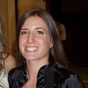
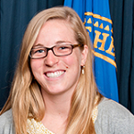
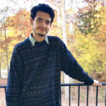

CCF has eight full-time staff members who work closely with the ministry's sixteen interns. Staff and interns strive to have fun, trusting and meaningful relationships with students at Tech. They live, love and teach in a way that hopefully points them to a loving Jesus, while also having fun and going on crazy adventures with students at Tech. Read below to learn all about each staff member and intern. Email any of the staff if you’d like to grab lunch or just talk with someone. That’s why they’re here!
Rick Harper
| Campus Minister | rick@gtccf.org
Rick and Beth Harper started GTCCF in May 1987. Rick received a degree in Business from the University of Georgia in 1983 and was also involved at the Christian Campus Fellowship at UGA. After graduating, Rick spent a year as an intern at CCF at Florida State. There he met Beth, who holds a degree in Nursing from FSU. Rick completed his Master’s degree at Emmanuel School of Religion in 1987 and they moved to Atlanta to begin CCF as well as their family. Beth works at home as a full-time mother to their three boys, Garrett, Donovan, and Grayson. They are all active members of Southwest Christian Church in East Point, GA, where Rick and Beth teach a Sunday School class for young married couples. Rick’s job as Campus Minister includes teaching at Bible Study on Thursday nights, leading the Big Sap Leadership group, and meeting with and counseling students. As Campus Minister, he reports to the GTCCF Board of Directors.
Neal Baker
| Senior Associate Minister | neal@gtccf.org
Neal Baker graduated from Georgia Tech with a Materials Engineering degree in 1996. He was an intern at GTCCF from 1996-97, after which he took the position of Senior Associate Minister. Simply put, Neal does all the stuff nobody else wants to do. He keeps CCF’s finances in order, manages the house, works with the sophomore leadership group, and occasionally fills in for Rick at Bible Study.
Ashley Teffeau
| Director of Donor Development | ashley@gtccf.org
Ashley Teffeau came to Georgia Tech in 2001 and achieved her dream of being a Yellow Jacket alumnae in 2006 with a B.S. in Management with certificates in Marketing and Finance. Ashley is the Director of Donor Development and enjoys keeping all of CCF’s alumni, parents, and churches involved and updated. She plans events for parents and alumni, and attends missions events at churches. CCF is fully funded by donations so she is happy to assist anyone with questions about giving to CCF. Or if you would like to be included on updates about the latest news at CCF please send her an email. She truly loves her job and seeing lives changed through each and every dollar. 
Jeremy Lawler
| Associate Minister | jeremy@gtccf.org
Jeremy Lawler is from Stone Mountain, GA and graduated from Georgia Tech with a degree in Civil Engineering. Afterwards, he worked as an intern at GTCCF and then moved overseas to help plant a Globalscope campus ministry in Spain. He has since completed his Master’s of Divinity degree at Emmanuel Christian Seminary in Johnson City, TN. Jeremy works with the upperclassmen students at CCF, and is in charge of our Tuesday night Cafe event.
Chris House
| Associate Minister | house@gtccf.org
Chris graduated from Georgia Tech in 2009 with a degree in Business Management. While at Tech, Chris was a four-year letter winner as well as team captain of the baseball team. Upon graduation, he interned at GTCCF and subsequently came on full-time staff in the summer of 2010. Being a former student-athlete, he has a passion to see the Kingdom of God expand among the athletes of Georgia Tech. Chris also leads Trivia Lunch on Mondays.
Sarah Gazaway
| Associate Minister | sarah@gtccf.org
Sarah came to Georgia Tech in 2005 from a small town in Kansas. She graduated from Tech in 2010 with a degree in International Affairs. The following year she interned at CCF, and married her husband Joshua a year after that. Sarah has been working with CCF since graduating from Georgia Tech, and she currently works with the freshmen class at GTCCF.
Marc Smith
| Associate Minister | marc@gtccf.org
Marc Smith graduated from Georgia Tech with a degree in Mechanical Engineering in 2002. The following year he interned at GTCCF, after which he married his wife Leslie. Marc and Leslie moved to TN, where Marc earned his Masters of Divinity from Emmanuel School of Religion. Marc has worked in student ministry since 2006. In 2008 God blessed Marc & Leslie with their son Gabriel. In 2011 Marc returned to GTCCF. In January of 2012 Marc & Leslie welcomed their second boy, Liam, into the world! Marc helps students fight poverty in Atlanta and around the world.
Hana Lokey
| Associate Minister | hana@gtccf.org
Hana Lokey is from a mix of Atlanta, Georgia and Denver, Colorado. She graduated from Georgia Tech in 2012 with a degree in International Affairs and Spanish. Soon after leaving Tech, Hana spent a year working on sanitation projects for refugees in Kenya. Hana works at GT CCF primarily with sophomores as well as senior girls. Meet the Interns
Every year a group of recent graduates of Georgia Tech (and occasionally other schools) decide that they want to give back to the CCF community that has meant so much to them during their time in college. Interns work at CCF for one year, they live at the house and they are a huge part of making CCF run. This includes leading small groups, preparing food for events, heading up different ministry groups, investing in students, creating a fun & safe environment for students in the Tech community and many other important aspects of CCF. Each intern is assigned a certain ministry group for the year, which is broken up into Freshmen, Sophomores, Upperclassmen, and Compassion. Check out the intern bios below to learn a little bit more about this year’s interns!

Emily Ard
| Freshmen Intern
Hometown: Columbus, Georgia
Major: Business Administration
Fun Fact: Emily received her Black Belt in Mixed Martial Arts in 2008.
"I am so excited about my role at CCF because it gives me the chance to meet and hang out with awesome students and share the love of Christ with the Georgia Tech community."

Drew Schneider
| Freshmen Intern
Hometown: Peachtree City, Georgia
Major: Computational Media
Fun Fact: Drew has jumped onto a moving train.
"I'm at CCF because I love the community and want to spread it as much as possible."

Schyler Habowski
| Freshmen Intern
Hometown: Cumming, Georgia
Major: Communications & Sociology
Fun Fact: Schyler enjoys avocados, puppies, and traveling.
"I'm interning at GTCCF because I want to make sure people know they're loved."

Cody Rasco
| Freshmen Intern
Hometown: Houston, Texas
Major: Mechanical Engineering
Fun Fact: Cody loves playing two-suited spider solitaire because it relaxes him.
" I'm interning because I know how important it is to have solid relationships during one's time at college, a time that you honestly become the person you're going to be for the foreseeable future. I'm here to simply make some of those relationships, not just for the students, but for myself as well; and if I can be used to point people toward Christ in the process, that'd be awesome. "

Carmie Cuda
| Freshmen Intern
Hometown: Springfield, Virginia
Major: Biomedical Engineering
Fun Fact: When she was four, Carmie begged her mom to let her legally change her last name to Jello.
"I'm here to learn and be a friend"
Evan Witham
| Sophomore Intern
Hometown: McDonough, Georgia
Major: International Affairs
Fun Fact: Even though he was born in Georgia, Evan was raised in the north and is considered a Boston sports fanatic.
"I decided to intern at CCF because I want to give back to the community that meant a lot to me during my years in school."
Bridget Ricks
| Sophomore Intern
Hometown: Macon, Georgia
Major: Business Administration
Fun Fact: Bridget is on a mission to eat all the best pies in America. And its going well. Reaaallly well.
"I'm here because my favorite part of being alive is getting to love people, getting to work at a place that revolves around doing just that seems too perfect!"
Glenn McDaniel
| Sophomore Intern
Hometown: Woodstock, Georgia
Major: Mechanical Engineering
Fun Fact: Glenn enjoys cycling, rock climbing, and general shenanigans with his friends.
"I wanted to intern so that I could show students the love that I was shown by my interns."
Elaina Thompson
| Sophomore Intern
Hometown: Bowdon, Georgia
Major: Architecture
Fun Fact: Elaina used to drag race in high school and may or may not have had an entire bedroom set in Dale Earnhardt theme.
"I am from Bowdon, GA. I went to Georgia Tech and majored in Architecture. I'm here because I wanted to give back to CCF what they gave me during my time as a student."
Julie Monteleone
| Upperclassmen Intern
Hometown: Marietta, Georgia
Major: Industrial Engineering
Fun Fact: When off the clock, you'll likely find Julie spending time with friends, baking pies, or riding horses.
"Before beginning my professional career, I desired the opportunity to serve CCF and give back to a community that so greatly and positively impacted my life. After all, how often is one given the chance to spend a year dedicated solely to growing spiritually and loving others?"

Alex Wong
| Upperclassmen Intern
Hometown: Alpharetta, Georgia
Major: Computer Science
Fun Fact: Alex really loves cats... his cat even has a Facebook!
"I'm interning at CCF because I love getting to know people and wanting to get people to know and feel Christ's love."
Kelli Allen
| Upperclassmen Intern
Hometown: Carrollton, Georgia
Major: Biology
Fun Fact: Kelli is the administrator of the Gale Hawthorne (love interest of Katniss from 'The Hunger Games') fan page on facebook.
"In my experience, CCF has always been an open, accepting, and safe place for students and I am really excited to have the opportunity to be involved in that."
Greg Jones
| Upperclassmen Intern
Hometown: Redondo Beach, California
Major: Mechanical Engineering
Fun Fact: Greg marched in the Rose Parade in High School.
"I'm interning this year to teach students about Jesus and give back to a ministry that has meant so much to me!"

Matthew Kinnemore
| Compassion Intern
Hometown: Stone Mountain, Georgia
Major: Mechanical Engineering
Fun Fact: Something that a lot of people don't know about Matt is that he's been playing the drums since he was five! He doesn't play much anymore, but still enjoys an occasional jam session.
"I'm working as an intern because I really enjoy serving people and my community the way Christ serves us."
Lindsay Pigford
| Compassion Intern
Hometown: Fayetteville, Georgia
Major: International Affairs and Modern Languages (Spanish)
Fun Fact: Some have called Lindsay the "Christmas Queen".
"I want to spend my life serving and loving others, and I'm so excited to be working at a ministry that is focused on just that."
Kevin Carr
| Compassion Intern
Hometown: Newnan, Georgia
Major: Chemical and Biomolecular Engineering
Fun Fact: Kevin really, really loves to play ping pong!
"I am here to love students and help them to connect with God."